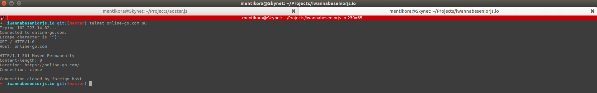
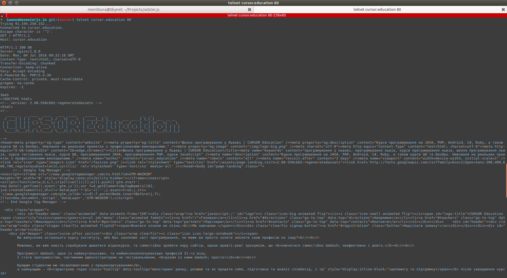

Web Request & Response
Homework info: https://gist.github.com/itspoma/a1efa174ebb9914eecac
All hometask images on dropbox: click here
1.Play with Chrome Developers Toolkit (DevTools), and "Network" tab (5 points)
Site #2: instagram.com
Site #3: online-go.com
 Site #4: tinypng.com
Site #5: github.com
Cache-Control - директиви для керування кешуванням
Connection - відомості про проведення з'єднання
Content-Encoding - спосіб кодування
Content-Type - формат і спосіб представлення
Date - дата запиту
Expires - дата закінчення терміну
Keep-Alive - час сесії... мабуть)
Pragma - особливі опції при виконанні
Server - назва серверу і його версія з компонентами
Transfer-Encoding - спосіб кодування
Vary - опис ресурсів, які були вказані при запиті
Accept - список допустимих форматів
Content-Language - мова
Host - ім"я домену і хост ресурсу
User-Agent - ПО клієнта і його характеристики
Source, wiki page: https://goo.gl/bdYAEL
2.What is differenct between HTTP version 1.0 and 1.1? (1 point)
Найбільша різниця - HTTP/1.0 передбачає передачу тільки одного запиту і однієї відповіді під час з'їднання, HTTP/1.1 - багатьох
Метод GET відправляє всю зібрану інформацію в URL, макс об"єм - 8кб
Зазвичай використовується для представлених пошукових запитів і у випадках, щоб користувач мав можливість перейти на поточну сторінку ще раз.
Метод POST - стандартним потоком, без додавання чогось в URL, макс об"єм - 255 символів
Використовується для більш захищених запитів, де дані можуть бути використані для зміни бази даних, інше
3.Use the "telnet" program (1 point)
4.Use actions on "Network" tab (1 point)
Ф-ції для тесту: вкладки JS/CSS/Img, фільтр по файлам
Основні моменти в майбутньому - оптимізація файлів для швидкодії сайту, пошук елементів, які не загрузились
5.Using the https://www.hurl.it/ (2 points)
Cache-Control - директиви для керування кешуванням
Connection - відомості про проведення з'єднання
Content-Encoding - спосіб кодування
Content-Type - формат і спосіб представлення
Date - дата запиту
Expires - дата закінчення терміну
Pragma - особливі опції при виконанні
Server - назва серверу і його версія з компонентами
Transfer-Encoding - способи кодування, які були використані для передачі
Vary - опис ресурсів, які були вказані при запиті
X-Powered-By - на якій мові програмування написано
6.Using the https://www.hurl.it/ (2 points) v2
HEAD є ідентичним GET за винятком того, що сервер не повинен повертати тіло повідомлення у відповіді.
Вся інформація, що міститься в заголовках HTTP у відповідь на запит HEAD, є ідентична інформації, надісланій у відповідь на запит GET.

7.Find and show few (at least 5) resources, where POST method is used (5 points)
adster.io, після нажаття на кнопку "Вход", передача login/password в POST
facebook.com, дані акаунту
google.com, сторінка зміни паролю акаунту, передача даних в POST
ua.linkedin.com, при вході в акаунт, передача login/password в POST
 ttnbook.com, після входу
ttnbook.com, після входу
8.Using the Postman extension (6 points)